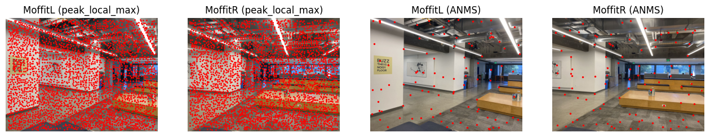
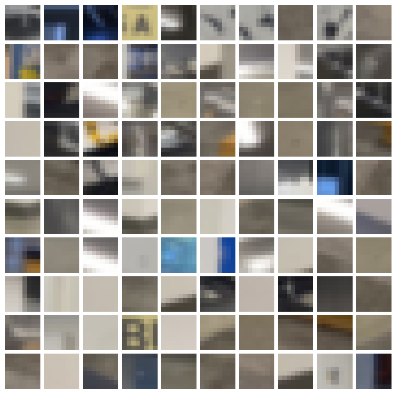
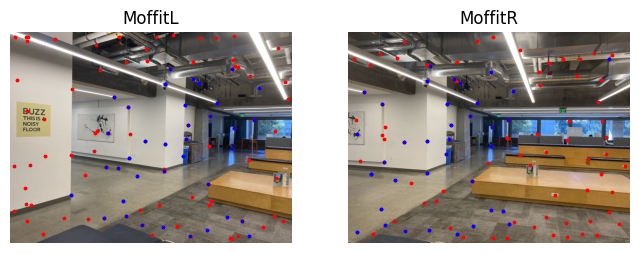
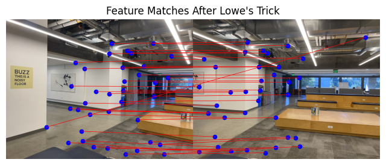
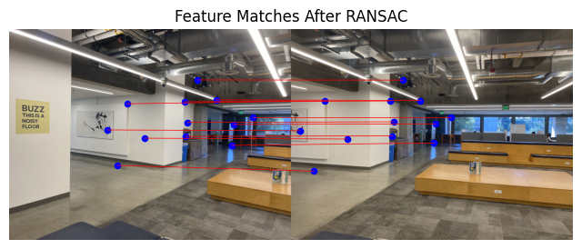
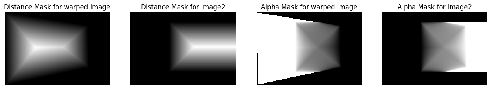
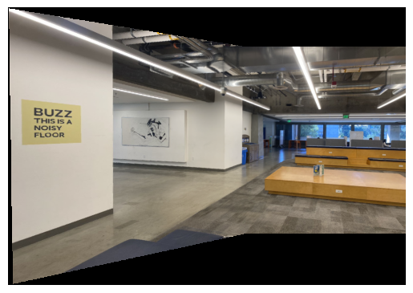

The goal of this project is to make a panorama manually from multiple images captured from the same center of projection.
This involves building an image mosaic by registering, projective warping, resampling, and compositing.
Starting by shooting my own photographs, I first recover the homography between images and warped them accordingly
onto a common projection plane. As a byproduct of this step, the homography matrix also enabled me to rectify any known
rectangular objects. Finally, the warped images were blended on the shared projection plane to produce the final mosaic.
Disclaimer: I downsized all the images to make the selection of correspondence points easier. This causes some of the images
to be blurry, but it doesn't affect the warping and mosaicing process!
Part 1: Shoot and Digitize Pictures
I shoot multiple photographs such that the transformation between them are projective. This is achieved by fixing the center
of projection(camera) and rotate my body while capturing photos. In particular, I used zoomed out setting(x0.5) on the first example, hoping it will make
the mosaic more interesting. Additionally, the photos are shoot close in time to avoid changes in lighting, and the fields of view
are significantly overlapped to make the registration easier.
Part 2: Recover Homographies
Homography is a projective transformation such that from a single point (x, y) to (x', y'):
\[
\begin{bmatrix}
a & b & c \\
d & e & f \\
g & h & 1
\end{bmatrix}
\begin{bmatrix}
x \\
y \\
1
\end{bmatrix}
=
\begin{bmatrix}
wx' \\
wy' \\
w
\end{bmatrix}
\]
If we expand the matrix multiplication into systems of equation, this can be simplified to the following matrix operation:
\[
\begin{bmatrix}
x & y & 1 & 0 & 0 & 0 & -xx' & -yx' \\
0 & 0 & 0 & x & y & 1 & -xy' & -yy'
\end{bmatrix}
\begin{bmatrix}
a \\
b \\
c \\
d \\
e \\
f \\
g \\
h
\end{bmatrix}
=
\begin{bmatrix}
x' \\
y'
\end{bmatrix}
\]
Given n correspondence points, it give us 2n many equations and 8 unknowns. This is an overconstrained system and can be solved
with least squares. I choose the naive solution 'np.linalg.lstsq()' to find the parameters and the result is quite reasonable
(given the output of my warped images).
Part 3. Warp the Images
Given the homography matrix H, I used the inverse warping to avoid random holes in the warped image. First, I apply forward warping
homography to the four corners to obtain the boundary of the warped image. With 'skimage.draw.polygon', it gives
me all the pixels that lies within the boundary. Then I apply inverse warping homography which maps all the points back to the
source image. To avoid potential aliasing in the resampling process, 'scipy.interpolate.griddata' is used to
obtain the corresponding RGB channels. In between the processes, I apply translation to keep all points positive and make sure
that the function runs smoothly
Part 4. Image Rectification
In this section, I take a photo that contains a rubik's cube and a photo that contains a laptop. Both photos contain
a known rectangular objects, and my goal is to make them rectangular using a homography. The distinction compare
to the previous section is that I only have one image to work with this time, and the correspondence points can not
be draw so easily. The trick turns out to be pretty simple, I define the correspondences using what I know about the
rectangular object. For instance, if I want to rectify the rubik's cube, then I know a priori that it is a square,
I can arbitrarily define the correspondence to [0, 0], [0, 200], [200, 0], [200, 200]
Part 5. Blend the images into a mosaic
With all the preparations complete, I can now align the images and blend them into a mosaic. The figure below showcases
one set of source images alongside their corresponding warped forms.
The first problem is alignment. Since the warped image is a translation of the source image, I manage to find the shifts
in both x and y direction and pad them to my images appropriately. Next, I find the area of intersection and apply
simple alpha average by setting alpha = 0.5. From the output mosaics, everything seems to be fine except on the edges of
intersection. This naive blending yields the result below. Note that the border artifact between im0 and im1 is much more
obstrude. This is because im1 and im2 are taking under a similar lighting setting, and im0 are taken facing the sunlight.
I would imagine that my phone camera automatically adjust some settings such as exposure that cause those differences.
To mitigate edges, I applied a gradient mask that adjusts values based on the distance to one side of the overlapping region.
With 'scipy.ndimage.distance_transform_edt', I was able to get the distance of each pixel to the border automatically.
Then I normalized the intersection mask such that the highest value is set to one and use it as an alpha mask for my
blending process. The result is quite amazing as shown below. I should also mention that the result is not perfect, likely due
to numerical imprecision and integer rounding in my alignment stage. Also, the image is rather small in the middle because
I took the photos with 0.5x zoom.
The figures below showcase two other examples of image mosaic :)
One attempt uses photos taken within a video game, ignoring user interface at the bottom, I think the screenshots blend pretty well!
Bells and Whistles: Fake Projection
I took a step further and attempt to project an among us figure onto the Berkeley tower!
Procedurally, it is very similar to rectification but warped to a different perspective.
The additional steps are the creation of a mask based on the white background and alignment to the tower.
I performed a simple addition at the end, and the result gives the impression that the figure is being
projected onto the tower just like an actual projector would!
Feature Matching and Autostitching
The work prior to this section relies heavily on the fact that the correspondence points are accurate, yet the determining of
correspondence points are largely by hand and can be time costly. Thus, we want to find a way to automatically label the
correspondence, which are mostly corners!
Step 1: Detecting Corner Features
We will start with harris interest point detector to automatically detect corners (inherently good correspondence choice).
While the math and algorithm is not trivial, I utilize skimage.feature.corner_harris for naive implementation.
Here is a generic algorithm in Harris detector behind the scene:
Compute Gaussian derivatives at each pixel
Compute second moment 2x2 matrix M in a Gaussian window around each pixel
However, the raw output returns more than 45000 corners, which would have cover my entire image if I were to plot it on a figure!
I try two filters for visualization:
Percentile Filter: filters to corners with an h value above 99% percentile
Max Pooling Filter: filters to corners that are local maximums of (50, 50) patch and has a h value above 0.25 (an empirical choice)
This is only for visualization because the next subsection in Adaptive Non-Maximal Suppression will sifted out most of them.
Now we have a way to detect features, we also want some good properties among the features! In particular, we want:
Fixed number of features per image
Spatially evenly distributed features
This motivates Adaptive Non-Maximal Suppression (ANMS), where I find the minimum suppression radius ri for each features.
Then 100 features with highest suppression radius are selected as the final subset. The idea of minimum suppression radius can be summarized
in one phrase as "a distance to the nearest stronger keypoint." :)
The mathematical definition for the minimum suppression radius is \[ r_i = \min_j \, \lvert \mathbf{x}_i - \mathbf{x}_j \rvert, \quad
\text{s.t.} \quad f(\mathbf{x}_i) < c_{\text{robust}} f(\mathbf{x}_j) \]
where xi, xj are corner features, and f(xi), f(xj) are response values from harris corner.
I picked the same crobust = 0.9 as in the paper to ensures that a neighbor must have significantly higher strength.
In the figure below, left images use skimage.feature.peak_local_max with min_distance = 10, resulting in 3089 features.
The right images uses the output from peak_local_max as the input to ANMS, which further reduces to the top 100 features with desired properties.

Step 2: Feature Descriptor
Given all the corner features, I need to somehow describe the feature with feature descriptors.
For a basic implementation, an axis-aligned patch is used, assuming there are no rotational factor between images.
Blur the image to avoid aliasing in the feature descriptors
For each corner feature, find the 40x40 window such that the corner is at the center
Downsample by a factor of s = 5 such that the feature descriptor are 8x8
Use bias/gain normalization and force the patch to have μ = 0 and σ = 1
The figure below shows feature descriptors for corner features in moffitL.

Step 3: Feature Matching
Lastly, I will need to find pairs of features that look similar.
This is acheived by first flatten feature descriptors into vectors of length 8x8x3 = 192. Then I can compute the l2 norm among all combinations
between the two images to find the nearest neighbor.
Yet the issue is that if only
one neighbor is used, two patches can be similar by chance or due to noise. Here, I apply Lowe's trick and compute the
ratio between L2 of the closest match and the L2 of the second-closest match.
The idea is that if the ratio is small, then there is only one good match between the two features, which makes it more likely to be
a true match!
In my work, I select a threshold of 0.4 to show that RANSAC does work in the next section.
I observed that a threshold below 0.3 can already proceduce a flawless match in this set of images!
The figure below demonstrates the result after apply Lowe's trick. Points labels in blue are recognized as good matching features.

Step 4: Random Sample Consensus(RANSAC)
With appropriate thresholding, Lowe's trick helps us to remove most of the outliers. However, the algorithm never guarentees that
it will only return true matches. This is where RANSAC comes in, which automatically find the correct homography based on the
set of good matches returned in feature matching section. It does so by filtering out the outliers and keep the largest set of
inliers. The algorithm proceeds as follows:
For some large n
Select four feature pairs at random
Compute the exact homography H
Compute inliers where dist(xj, Hxi) < ε
Keep largest set of inliers
Re-compute least-squares H estimate on all of the inliers


Step 5: More Mosaics
Below are the results using automatic feature matching and RANSAC. The alignment using the automated features
are essentially indistinguishable from hand-picked correspondence (and I believe the features are even more accurate!).
Yet since least squared solution is used in computing the homography, the manual errors is mediated because
the algorithm can see them as random noise.
I found the various method in auto-detecting corners to be the coolest thing. With different algorithms, we can keep refining
down to the correct correspondences - even to features that can't be seen by eye! If we look at the visualization for
RANSAC correspondence careful, we can see that one of the features is detected on the smooth white wall!
Moreover, the results here are potential better because I reimplement the distance blending
with 'scipy.ndimage.distance_transform_edt', and this time useing the full mask rather than just one edge.

Moffit with manual correspondences
Moffit with automatic features and distance blending
